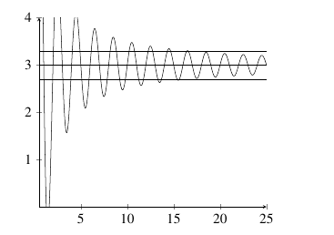
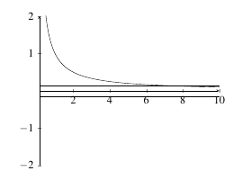

2.4 The Precise Definition of a Limit
So far, we have used a fairly colloquial definition of a limit. While a mathematician understands what is technically meant by terms like ``close enough’’, it is important that we make these sorts of terms clear. For that reason, we introduce the precise definition of a limit.
Definition: The statement \(\displaystyle\lim_{x \rightarrow a} f(x) = L\) means given any real number \(\varepsilon > 0\), there exists another real number \(\delta > 0\) so that if \(0 < |x-a| < \delta\), then \(|f(x) - L| < \varepsilon\).
In general, the value of \(\delta\) will depend on the value of \(\varepsilon\). In light of that, we begin with \(\varepsilon > 0\) and then determine an appropriate value of \(\delta > 0\). Of course, there are infinitely many values of \(\delta\) that will work. In particular, for any \(\delta\) that works, all values on \((0,\delta)\) will also work.
While this definition seems abstract, it is actually quite sensible. The diagram below will help clarify what is going on.
We begin by creating an \(\varepsilon\) band around the number \(L\) on the vertical axis. You can think of this as . Based on that \(\varepsilon\) band, we determine a value of \(\delta\) so that a \(\delta\) band around the number \(a\) on the horizontal axis has corresponding \(y\)-values which all fall inside the \(\varepsilon\) band. If we can find a \(\delta\) band no matter which value of \(\varepsilon > 0\) is selected, we have proved that \(L\) is the correct limit. If not, then \(L\) is not the limit or the limit does not exist.
Example: Prove that \(\displaystyle\lim_{x \rightarrow 8} 3x + 2 = 26\).
Solution: Let \(\varepsilon > 0\) be given. Select \(\delta = \varepsilon / 3\). Let \(|x-8| < \delta\). We need to show that \(|(3x+2) - 26| < \varepsilon\). Observe that \[\begin{align*} |(3x + 2)-26| &= |3x - 24|\\ &=|3(x - 8)|\\ &=|3||x-8|\\ &< 3\delta\\ &= 3(\varepsilon/3)\\ &=\varepsilon. \end{align*}\] Therefore, since \(|(3x+2)-26| < \varepsilon\) whenever \(|x-8| < \delta\), we know \(\displaystyle\lim_{x \rightarrow 8} 3x+2 = 26\).
In order to determine the value of \(\delta\) above, one needs to reverse engineer the problem. The logical sequence that allows you to determine \(\delta\) is the following: \[\begin{align*} &&& &\hspace{-4in}|(3x + 2) - 26| &< \varepsilon&&&&&\text{ }\\ &&\Leftrightarrow & &\|3x -24| &< \varepsilon\\ &&\Leftrightarrow & &|3(x -8)| &< \varepsilon\\ &&\Leftrightarrow & &3|x -8| &< \varepsilon\\ &&\Leftrightarrow & &|x-8| &< \varepsilon/3 = \delta. \end{align*}\] By selecting \(\delta = \varepsilon/3\), the logic will flow backward so that eventually \(|(3x + 2)-26| < \varepsilon\).
Example: Prove that \(\displaystyle\lim_{x \rightarrow 1} 5-2x = 3\).
Solution: Let \(\varepsilon > 0\) be given. Select \(\delta = \varepsilon / 2\). Let \(|x-1| < \delta\). We need to show that \(|(5-2x) - 3| < \varepsilon\). Observe that \[\begin{align*} |(5-2x)-3| &= |2-2x|\\ &=|2(1-x)|\\ &=|2||1-x|\\ &< 2\delta\\ &= 2(\varepsilon/2)\\ &=\varepsilon. \end{align*}\] Therefore, since \(|(5-2x)-3| < \varepsilon\) whenever \(|x-1| < \delta\), we know \(\displaystyle\lim_{x \rightarrow 1} 5-2x = 3\).
Example: Prove that \(\displaystyle\lim_{x \rightarrow 3} x^2 + x = 12\).
Solution: Let \(\varepsilon > 0\) be given. Select \(\delta = \min(\varepsilon /8,1)\). Let \(|x-3| < \delta\). We need to show that \(|(x^2 + x) - 12| < \varepsilon\). Observe that since \(\delta \leq 1\), we know that \(|x-3| \leq 1\). So, \(-1 \leq x-3 \leq 1\). Therefore, \(|x+4| \leq 8\). With that in mind, \[\begin{align*} |(x^2 + x) - 12| &= |x^2 + x - 12|\\ &= |x^2 + x - 12|\\ &= |(x+4)(x-3)|\\ &= |x+4||x-3|\\ &\leq 8|x-3|\\ &< 8\delta\\ &\leq 8 \varepsilon/8\\ &=\varepsilon. \end{align*}\] Therefore, since \(|(x^2 + x) - 12| < \varepsilon\) whenever \(|x-3| < \delta\), we know \(\displaystyle\lim_{x \rightarrow 3} x^2 + x = 12\).
Practice Problems
- Prove each of the following limits using an \(\varepsilon\)-\(\delta\) argument.
\(\displaystyle\lim_{x \rightarrow 2} 7x - 3 = 11\)
\(\displaystyle\lim_{x \rightarrow -1} 4 - 5x = 9\)
\(\displaystyle\lim_{x \rightarrow 4} -5 - 2x = -13\)
\(\displaystyle\lim_{x \rightarrow -2} 3x - 5 = -11\)
\(\displaystyle\lim_{x \rightarrow 2} x^2 + 2 = 6\)
\(\displaystyle\lim_{x \rightarrow -1} 3x^2 + 3 = 6\)
- Let \(c\) be a constant, \(a,n \in \mathbb{R}\) and \(f\) and \(g\) functions defined on some open interval containing \(a\) (though possibly not at \(a\) itself). Prove each of the following:
\(\displaystyle\lim_{x \rightarrow a} c = c\) (Constant Law)
\(\displaystyle\lim_{x \rightarrow a} x = a\) (Identity Law)
\(\displaystyle\lim_{x \rightarrow a} f(x) \pm g(x) = L \pm M\) (Sum and Difference Laws)
\(\displaystyle\lim_{x \rightarrow a} cf(x) = c \displaystyle\lim_{x \rightarrow a} f(x) = cL\) (Constant Coefficient Law)
\(\displaystyle\lim_{x \rightarrow a} f(x) \cdot g(x) = \displaystyle\lim_{x \rightarrow a} f(x) \cdot \displaystyle\lim_{x \rightarrow a} g(x) = L \cdot M\) (Multiplication Law)
\(\displaystyle\lim_{x \rightarrow a} \frac{f(x)}{g(x)} = \dfrac{\displaystyle\lim_{x \rightarrow a} f(x)}{\displaystyle\lim_{x \rightarrow a} g(x)} = \dfrac{L}{M}\) (Division Law)
\(\displaystyle\lim_{x \rightarrow a} \left( f(x) \right)^n = \left(\displaystyle \lim_{x \rightarrow a} f(x) \right)^n = L^n\) (Power Law)
Proof of Limit Laws
In this section, we will prove the various limit laws using the precise definition of a limit.
Theorem (Limit Laws): Let \(f\) and \(g\) be functions, \(c\) a constant and \(a,n \in \mathbb{R}\). Suppose \(\displaystyle\lim_{x \rightarrow a} f(x) = L\) and \(\displaystyle\lim_{x \rightarrow a} g(x) = M\) with \(L,M \in \mathbb{R}\). The following properties hold:
- \(\displaystyle\lim_{x \rightarrow a} c = c\) (Constant Law)
- \(\displaystyle\lim_{x \rightarrow a} x = a\) (Identity Law)
- \(\displaystyle\lim_{x \rightarrow a} f(x) \pm g(x) = L \pm M\) (Sum and Difference Laws)
- \(\displaystyle\lim_{x \rightarrow a} cf(x) = c \displaystyle\lim_{x \rightarrow a} f(x) = cL\) (Constant Coefficient Law)
- \(\displaystyle\lim_{x \rightarrow a} f(x) \cdot g(x) = \displaystyle\lim_{x \rightarrow a} f(x) \cdot \displaystyle\lim_{x \rightarrow a} g(x) = L \cdot M\) (Multiplication Law)
- \(\displaystyle\lim_{x \rightarrow a} \frac{f(x)}{g(x)} = \dfrac{\displaystyle\lim_{x \rightarrow a} f(x)}{\displaystyle\lim_{x \rightarrow a} g(x)} = \dfrac{L}{M}\), with \(M \not = 0\) (Division Law)
- \(\displaystyle\lim_{x \rightarrow a} \left( f(x) \right)^n = \left(\displaystyle\lim_{x \rightarrow a} f(x) \right)^n = L^n\) (Power Law)
We prove each one of these below.
Theorem (Constant Law): Let \(a \in \mathbb{R}\) and \(c\) a constant. Then, \(\displaystyle\lim_{x \rightarrow a} c = c\).
Proof:
Let \(\varepsilon > 0\) be given. Select any \(\delta > 0\) and take \(|x-a| < \delta\). In this situation, \(f(x) = c\) and \(L = c\). Then \(|f(x) - L| = |c - c| = 0 < \varepsilon\). Therefore, by the precise definition of a limit, we have \(\displaystyle\lim_{x \rightarrow a} c = c\).
Theorem (Identity Law): Let \(a \in \mathbb{R}\). Then, \(\displaystyle\lim_{x \rightarrow a} x = a\).
Proof: Let \(\varepsilon > 0\) be given. Select \(\delta = \varepsilon\) and take \(|x-a| < \delta\). In this situation, \(f(x) = x\) and \(L = x\). Then \(|f(x) - L| = |x - a| < \delta = \varepsilon\). Therefore, by the precise definition of a limit, we have \(\displaystyle\lim_{x \rightarrow a} x = a\).
Theorem (Difference Law): Let \(a \in \mathbb{R}\) and \[\displaystyle\lim_{x \rightarrow a} f(x) = L \; \text{ and } \; \displaystyle\lim_{x \rightarrow a} g(x) = M.\] Then, \(\displaystyle\lim_{x \rightarrow a} f(x) \pm g(x) = L \pm M\).
Proof: Let \(\varepsilon > 0\) be given. Since \(\displaystyle\lim_{x \rightarrow a} f(x) = L\), there exists \(\delta_1>0\) such that \[|f(x) - L| < \varepsilon/2 \text{ whenever }|x-a| < \delta_1.\] Since \(\displaystyle\lim_{x \rightarrow a} g(x) = M\), there exists \(\delta_2 >0\) such that \[|g(x) - M| < \varepsilon/2 \text{ whenever } |x-a| < \delta_2.\]
Select \(\delta = \min(\delta_1, \delta_2)\). Take \(|x-a| < \delta\). In this case, both of the conditions above hold. Then, \[\begin{align*} |(f(x) \pm g(x)) - (L \pm M)| &= |(f(x) - L) \pm (g(x) - M)|\\ &\leq |f(x) - L| + |\pm g(x) - \pm M|\\ &\leq \varepsilon/2 + \varepsilon/2\\ &= \varepsilon. \end{align*}\] So, by the precise definition of a limit, we have \(\displaystyle\lim_{x \rightarrow a} f(x) \pm g(x) = L \pm M\).
Theorem (Constant Coefficient Law): Let \(a \in \mathbb{R}\) and \(\displaystyle\lim_{x \rightarrow a} f(x) = L\). Then, \[\displaystyle\lim_{x \rightarrow a} cf(x) = c \displaystyle\lim_{x \rightarrow a} f(x) = cL.\]
Proof: If \(c = 0\), the result follows from the Constant Law.
Let \(\varepsilon > 0\) be given and take \(c \in \mathbb{R}\) with (\(c \not = 0\)). Since \(\displaystyle\lim_{x \rightarrow a} f(x) = L\), there exists \(\delta>0\) such that \[|f(x) - L| < \varepsilon/c \text{ whenever }|x-a| < \delta.\] Take \(|x-a| < \delta\). Then, \[\begin{align*} |cf(x) - cL| &= |c(f(x) - L)|\\ &= c|f(x) - L|\\ &\leq c \varepsilon/c\\ &= \varepsilon. \end{align*}\] So, by the precise definition of a limit, we have \(\displaystyle\lim_{x \rightarrow a} cf(x) = c \displaystyle\lim_{x \rightarrow a} f(x) = cL\).
Theorem (Multiplication Law): Let \(a \in \mathbb{R}\) and \[\displaystyle\lim_{x \rightarrow a} f(x) = L \; \text{and} \; \displaystyle\lim_{x \rightarrow a} g(x) = M.\] Then, \[\displaystyle\lim_{x \rightarrow a} f(x) \cdot g(x) = \displaystyle\lim_{x \rightarrow a} f(x) \cdot \displaystyle\lim_{x \rightarrow a} g(x) = L \cdot M.\]
Proof: Let \(\varepsilon > 0\) be given. Since \(\displaystyle\lim_{x \rightarrow a} f(x) = L\), there exists a \(\delta_1 > 0\) such that \[|f(x) - L| < \sqrt{\varepsilon} \; \text{ whenever} \; |x-a| < \delta_1.\] Moreover, since \(\displaystyle\lim_{x \rightarrow a} g(x) = M\), there exists a \(\delta_2 > 0\) such that \[|g(x) - M| < \sqrt{\varepsilon} \; \text{ whenever} \; |x-a| < \delta_2.\]
Select \(\delta = \min(\delta_1, \delta_2)\). Take \(|x-a| < \delta\) and in this case, both of the previous conditions hold. We note that \[\begin{align*} |f(x)g(x) - LM| &= |(f(x) - L)(g(x) - M) - 0|\\ &= |f(x) - L||g(x) - M|\\ &\leq \sqrt{\varepsilon} \sqrt{\varepsilon}\\ &= \varepsilon. \end{align*}\] Therefore, we have shown that \(\displaystyle\lim_{x \rightarrow a}\left[f(x)-L \right] \left[g(x) - M \right] = 0\).
We now note that \[(f(x) - L)(g(x) - M) = f(x)g(x) - Mf(x) - Lg(x) + ML.\] Rearranging, we find that \[f(x)g(x) = (f(x) - L)(g(x) - M)+ Mf(x) + Lg(x) - ML.\]
We now can proceed with the proof. \[\begin{align*}\mathop {\lim }\limits_{x \to a} f\left( x \right)g\left( x \right) & = \mathop {\lim }\limits_{x \to a} \left[ {\left[ {f\left( x \right) - L} \right]\left[ {g\left( x \right) - M} \right] + Mf\left( x \right) + Lg\left( x \right) - LM} \right]\\ & = \mathop {\lim }\limits_{x \to a} \left[ {f\left( x \right) - L} \right]\left[ {g\left( x \right) - M} \right] + \mathop {\lim }\limits_{x \to a} Mf\left( x \right) + \mathop {\lim }\limits_{x \to a} Lg\left( x \right) - \mathop {\lim }\limits_{x \to a} LM\\ & = 0 + \mathop {\lim }\limits_{x \to a} Mf\left( x \right) + \mathop {\lim }\limits_{x \to a} Lg\left( x \right) - \mathop {\lim }\limits_{x \to a} LM\hspace{0.5in}\hspace{0.5in}\\ & = LM + LM - LM\\ & = LM. \end{align*}\] So, by the precise definition of a limit, we have \[\displaystyle\lim_{x \rightarrow a} f(x) \cdot g(x) = \displaystyle\lim_{x \rightarrow a} f(x) \cdot \displaystyle\lim_{x \rightarrow a} g(x) = L \cdot M.\]
Theorem (Division Law): Let \(a \in \mathbb{R}\) and \[\displaystyle\lim_{x \rightarrow a} f(x) = L \; \text{and} \; \displaystyle\lim_{x \rightarrow a} g(x) = M.\] Then, \[\displaystyle\lim_{x \rightarrow a} \frac{f(x)}{g(x)} = \dfrac{\displaystyle\lim_{x \rightarrow a} f(x)}{\displaystyle\lim_{x \rightarrow a} g(x)} = \dfrac{L}{M}$, with $M \not = 0.\]
Proof: We begin by proving that \[\displaystyle\lim_{x \rightarrow a} \frac{1}{g(x)} = \dfrac{1}{M}.\] Let \(\varepsilon > 0\). Because \(\displaystyle\lim_{x \rightarrow a} g(x) = M\), there is a \(\delta_1 > 0\) such that \[\left| {g\left( x \right) - M} \right| < \frac{{\left| M \right|}}{2}\hspace{0.5in}{\mbox{whenever}}\hspace{0.5in}0 < \left| {x - a} \right| < {\delta _{\,1}}.\] If \(|x-a| < \delta_1\), we have, \[\begin{align*} \left| M \right| & = \left| {M - g\left( x \right) + g\left( x \right)} \right| \\ & \le \left| {M - g\left( x \right)} \right| + \left| {g\left( x \right)} \right| \\ & = \left| {g\left( x \right) - M} \right| + \left| {g\left( x \right)} \right|\\ & < \frac{{\left| M \right|}}{2} + \left| {g\left( x \right)} \right|.\end{align*}\] So, we have \(\left| M \right| < \frac{{\left| M \right|}}{2} + \left| {g\left( x \right)} \right|\). Thus, we can bound \(g(x)\) by \(\frac{{\left| M \right|}}{2} < \left| {g\left( x \right)} \right|\) or that \[\frac{1}{{\left| {g\left( x \right)} \right|}} < \frac{2}{{\left| M \right|}}.\]
There is also a \(\delta_2 > 0\) such that \[\left| {g\left( x \right) - M} \right| < \frac{{{{\left| M \right|}^2}}}{2}\varepsilon \hspace{0.5in}{\mbox{whenever}}\hspace{0.5in} \left| {x - a} \right| < {\delta _{\,2}}.\]
Now, select \(\delta = \min(\delta_1, \delta_2)\). If \(|x-a| < \delta\), we have \[\begin{align*}\left| {\frac{1}{{g\left( x \right)}} - \frac{1}{M}} \right| & = \left| {\frac{{M - g\left( x \right)}}{{Mg\left( x \right)}}} \right|\\ & = \frac{1}{{\left| {Mg\left( x \right)} \right|}}\left| {M - g\left( x \right)} \right|\\ & = \frac{1}{{\left| M \right|}}\frac{1}{{\left| {g\left( x \right)} \right|}}\left| {g\left( x \right) - M} \right|\\ & < \frac{1}{{\left| M \right|}}\frac{2}{{\left| M \right|}}\left| {g\left( x \right) - M} \right|\\ & < \frac{2}{{{{\left| M \right|}^2}}}\frac{{{{\left| M \right|}^2}}}{2}\varepsilon\\ & = \varepsilon. \end{align*}\]
Now that we proved that \(\mathop {\lim }\limits_{x \to a} \frac{1}{{g\left( x \right)}} = \frac{1}{M}\), the result follows since \[\begin{align*}\mathop {\lim }\limits_{x \to a} \left[ {\frac{{f\left( x \right)}}{{g\left( x \right)}}} \right] & = \mathop {\lim }\limits_{x \to a} \left[ {f\left( x \right)\frac{1}{{g\left( x \right)}}} \right]\\ & = \mathop {\lim }\limits_{x \to a} f\left( x \right)\mathop {\lim }\limits_{x \to a} \frac{1}{{g\left( x \right)}}\\ & = L\frac{1}{M}\\ & = \frac{L}{M}.\end{align*}\]
At this point, we are unable to prove the general version of the power law. Instead, we prove it in the case where \(n \in \mathbb{Z}^+\).
Theorem (Power Law): Let \(a \in \mathbb{R}\), \(n \in \mathbb{Z}^+\), and \[\displaystyle\lim_{x \rightarrow a} f(x) = L.\] Then, \[\displaystyle\lim_{x \rightarrow a} \left( f(x) \right)^n = \left(\displaystyle\lim_{x \rightarrow a} f(x) \right)^n = L^n.\]
Proof: We prove this law by induction. When \(n = 2\), \[\mathop {\lim }\limits_{x \to a} {\left[ {f\left( x \right)} \right]^2} = \mathop {\lim }\limits_{x \to a} f\left( x \right)f\left( x \right) = \mathop {\lim }\limits_{x \to a} f\left( x \right)\mathop {\lim }\limits_{x \to a} f\left( x \right) = LL = {L^2}.\] Assume that this rule holds for some integer \(k > 2\). In this case, we know that \[\displaystyle\lim_{x \rightarrow a} \left( f(x) \right)^k = \left(\displaystyle\lim_{x \rightarrow a} f(x) \right)^k = L^k.\] We need to show that the property holds for \(k+1\). Observe that \[\begin{align*}\mathop {\lim }\limits_{x \to a} {\left[ {f\left( x \right)} \right]^{k+1}} & = \mathop {\lim }\limits_{x \to a} \left( {{{\left[ {f\left( x \right)} \right]}^{k}}f\left( x \right)} \right)\\ & = \mathop {\lim }\limits_{x \to a} {\left[ {f\left( x \right)} \right]^{k}}\mathop {\lim }\limits_{x \to a} f\left( x \right)\\ & = {L^{k}}L\\ & = {L^{k+1}}.\end{align*}\] So, by the first principle of mathematical induction, \[\displaystyle\lim_{x \rightarrow a} \left( f(x) \right)^n = \left(\displaystyle\lim_{x \rightarrow a} f(x) \right)^n = L^n.\]
Practice Problems
- Prove each of the following results.
\(\displaystyle\lim_{x \rightarrow a} \sqrt{x} = \sqrt{a}\) for \(a > 0\).
\(\displaystyle\lim_{x \rightarrow a} x^{2/3} = a^{2/3}\)
\(\displaystyle\lim_{x \rightarrow a} f(x)g(x)h(x) = \displaystyle\lim_{x \rightarrow a} f(x)\displaystyle\lim_{x \rightarrow a} g(x)\displaystyle\lim_{x \rightarrow a} h(x)\)
\(\displaystyle\lim_{x \rightarrow a} \dfrac{1}{\sqrt{x}}=\dfrac{1}{\sqrt{a}}\), for \(a > 0\)
- Let \(\displaystyle\lim_{x \rightarrow a} f(x) = \infty\) and \(\lim_{x \rightarrow a} g(x) = L\) for some real numbers \(c\) and \(L\). Prove each of the following properties:
\(\displaystyle\lim_{x \rightarrow a} f(x) \pm g(x) = \infty\)
\(\displaystyle\lim_{x \rightarrow a} f(x)g(x) = \infty\), if \(L>0\)
\(\displaystyle\lim_{x \rightarrow a} f(x)g(x) = -\infty\), if \(L < 0\)
\(\displaystyle\lim_{x \rightarrow a} \dfrac{g(x)}{f(x)} = 0\)
Proofs of Trigonometric Limits
Theorem: \(\displaystyle\lim_{\theta \rightarrow 0} \dfrac{\sin \theta}{\theta} = 1\).
Proof: Let \(\varepsilon > 0\) be given. Select \(\delta = \min(2/\varepsilon, 1)\). Take \(|x-0| < \delta\). We need to show that \(|\dfrac{\sin(x)}{x} -1| < \varepsilon\). Since \(|x| < \delta\), we know that \(|x|<1\). Observe that \[\begin{align*} |\dfrac{\sin(x)}{x} -1| &= |\dfrac{\sin(x) - x}{x}|\\ &= \dfrac{|\sin(x) - x|}{|x|}\\ &\leq \dfrac{|\sin(x)|+ |x|}{|x|}\\ &\leq \dfrac{1 + |x|}{|x|}\\ &\leq \dfrac{1 + 1}{|x|}\\ &= \dfrac{2}{|x|}\\ &\leq \dfrac{2}{\delta}\\ &\leq \dfrac{2}{2/\varepsilon}\\ &\leq \varepsilon. \end{align*}\] Therefore, by the precise definition of a limit, we know \(\displaystyle\lim_{\theta \rightarrow 0} \dfrac{\sin \theta}{\theta} = 1\).
Theorem: \(\displaystyle\lim_{\theta \rightarrow 0} \dfrac{\cos \theta - 1}{\theta} = 0\).
Proof: We prove the theorem directly. \[\begin{align*} \displaystyle\lim_{\theta \rightarrow 0} \dfrac{\cos \theta - 1}{\theta} &= \displaystyle\lim_{\theta \rightarrow 0} \dfrac{\cos \theta - 1}{\theta} \times \dfrac{\cos \theta + 1}{\cos \theta + 1}\\ &= \displaystyle\lim_{\theta \rightarrow 0} \dfrac{\cos^2 \theta - 1}{\theta(\cos \theta + 1)} \\ &= \displaystyle\lim_{\theta \rightarrow 0} \dfrac{-\sin^2 \theta}{\theta(\cos \theta + 1)} \\ &= \displaystyle\lim_{\theta \rightarrow 0} \dfrac{\sin \theta}{\theta} \times \dfrac{-\sin \theta}{\cos \theta + 1} \\ &= \displaystyle\lim_{\theta \rightarrow 0} \dfrac{\sin \theta}{\theta} \times \displaystyle\lim_{\theta \rightarrow 0}\dfrac{-\sin \theta}{\cos \theta + 1} \\ &= 1 \times \dfrac{-\sin(0)}{\cos(0) + 1} \\ &= 1 \times \dfrac{0}{1 + 1} \\ &= 0. \end{align*}\] Therefore, \(\displaystyle\lim_{\theta \rightarrow 0} \dfrac{\cos \theta - 1}{\theta} = 0\).
Limits at Infinity by Definition
We have dealt with the precise definition of a limit as it relates to limits as finite values. We now discuss limits of functions at infinity.
Definition: Let \(f\) be a function defined on the interval \((a, \infty)\) for some \(a \in \mathbb{R}\). Then \[\lim_{x \rightarrow \infty} f(x) = L,\] if for any given \(\varepsilon > 0\), there exists an \(M > 0\) such that \[|f(x) - L| < \varepsilon \;\;\; \text{provided} \;\;\; x > M.\]
|  |
|---|
Definition:
Let \(f\) be a function defined on the interval \((-\infty, b)\) for some \(b \in \mathbb{R}\). Then \[\lim_{x \rightarrow -\infty} f(x) = L,\] if for any given \(\varepsilon > 0\), there exists an \(M > 0\) such that \[|f(x) - L| < \varepsilon \;\;\; \text{provided} \;\;\; x < M.\]
For an infinite limit to exist, the value of the function must be asymptotic to the limit value. This means that as \(x\) exceeds some value \(M\) (either in the positive or negative direction), the function value must be within \(\varepsilon\) units from the limit value for every \(x\) beyond \(M\).
|  |
|---|
Example: Use the precise definition of a limit to show that \(\displaystyle\lim_{x \rightarrow \infty} \dfrac{1}{x} = 0\).
Solution: Let \(\varepsilon > 0\) be given. We need to find an \(M > 0\) such that \[|\dfrac{1}{x} - 0| = \dfrac{1}{|x|} < \varepsilon,\] provided \(x > M\). Take \(M = \dfrac{1}{\varepsilon}\). Then for any \(x > M\), we have \[\begin{align*} \left|\dfrac{1}{x} - 0 \right| &= \dfrac{1}{|x|}\\ &< \dfrac{1}{M}\\ &= \dfrac{1}{1/\varepsilon}\\ &= \varepsilon. \end{align*}\] Since \(\left|\dfrac{1}{x} - 0 \right| < \varepsilon\), we have shown that \[ \lim_{x \rightarrow \infty} \dfrac{1}{x} = 0.\]
Practice Problems
- Prove each of the following limits using the precise definition of a limit.
\(\displaystyle\lim_{x \rightarrow \infty} \dfrac{1}{x} +3 = 3\)
\(\displaystyle\lim_{x \rightarrow \infty} \dfrac{1}{x^2} = 0\)
\(\displaystyle\lim_{x \rightarrow -\infty} \dfrac{1}{x} = 0\)
\(\displaystyle\lim_{x \rightarrow \infty} \dfrac{1}{\sqrt{x}} = 0\)
\(\displaystyle\lim_{x \rightarrow \infty} \ln(1+1/x) = 0\)
\(\displaystyle\lim_{x \rightarrow \infty} \dfrac{1}{e^x}=0\)
B. If \(r\) is a positive rational number and \(c\) is any real number, prove \[\lim_{x \rightarrow \infty} \dfrac{c}{x^r} = 0.\]
C. If \(r\) is a positive rational number, \(c\) is any real number and \(x^r\) is defined for \(x < 0\), prove \[\lim_{x \rightarrow -\infty} \dfrac{c}{x^r} = 0.\]
D. If \(p(x) = a_nx^n + a_{n-1}x^{n-1} + \cdots + a_1x + a_0\) is a polynomial of degree \(n\), prove \[\lim_{x \rightarrow \infty} p(x) = \lim_{x \rightarrow \infty} a_nx^n.\]
Proof of Direct Substitution Property
We are now in a position to prove the direct substitution property for polynomials and rational functions.
Theorem (The Direct Substitution Property for Polynomials): If \(p\) is a polynomial then \[\lim_{ x \rightarrow a} p(x) = p(a).\]
Proof: Let \(p\) be any polynomial. Let \(q(x) = p(x) - p(a)\). The polynomial \(q\) has a root at \(a\). Thus, \(x-a\) divides \(q\). Set \[\dfrac{q(x)}{x-a} = b_nx^n + b_{n-1}x^{n-1} + \cdots + b_1x + b_0.\] Let \(\varepsilon > 0\) be given. We have two cases depending on whether \(a = 0\) or \(a \not = 0\).
CASE 1: If \(a = 0\), set \(\delta = \min(\varepsilon/c,1)\) where \(c = \sum_{i=0}^n |b_i|\). Suppose that \(|x| < \delta\). Since \(|x| < 1\), we know \[\begin{align*} \left|\dfrac{q(x)}{x-a} \right| &= \left|b_nx^n + b_{n-1}x^{n-1} + \cdots + b_1x + b_0 \right|\\ &\leq |b_nx^n| + |b_{n-1}x^{n-1}| + \cdots + |b_1x| + |b_0|\\ &= |b_n||x|^n + |b_{n-1}||x|^{n-1} + \cdots + |b_1||x| + |b_0|\\ &< |b_n| + |b_{n-1}| + \cdots + |b_1| + |b_0|\\ &= c \end{align*}\] Since \(|x| < \dfrac{\varepsilon}{c}\), we have \[\begin{align*} |q(x)| &= |p(x)-p(a)|\\ &=|x| \cdot |b_nx^n + b_{n-1}x^{n-1} + \cdots + b_1x + b_0|\\ &\leq \dfrac{\varepsilon}{c} \cdot c\\ &= \varepsilon. \end{align*}\]
CASE 2: If \(a \not = 0\), set \(\delta = \min(\varepsilon/c, |a|)\) where \(c = \sum_{i=0}^n |b_i||2a|^i\). Suppose \(|x-a| < \delta\). Since \(|x-a| < |a|\), we have \(|x| < 2|a|\) so that \[\begin{align*} \left|\dfrac{q(x)}{x-a} \right| &= |b_nx^n + b_{n-1}x^{n-1} + \cdots + b_1x + b_0|\\ &\leq |b_nx^n| + |b_{n-1}x^{n-1}| + \cdots + |b_1x| + |b_0|\\ &= |b_n||x|^n + |b_{n-1}||x|^{n-1} + \cdots + |b_1||x| + |b_0|\\ &< |b_n||2a|^n + |b_{n-1}||2a|^{n-1} + \cdots + |b_1||2a| + |b_0|\\ &= c. \end{align*}\] Since \(|x| < \dfrac{\varepsilon}{c}\), we have \[\begin{align*} |q(x)| &= |p(x)-p(a)|\\ &=|x| \cdot |b_nx^n + b_{n-1}x^{n-1} + \cdots + b_1x + b_0|\\ &\leq \dfrac{\varepsilon}{c} \cdot c\\ &= \varepsilon. \end{align*}\]
Corollary (Direct Substitution Property for Rational Functions): If \(f\) is a rational function, and \(a\) is in the domain of \(f\), then \[\lim_{ x \rightarrow a} f(x) = f(a).\]
Proof: This follows directly from the Division Law for limits and the Direct Substitution Property for Polynomials.
Practice Problems
Prove each of the following functions has the direct substitution property on their domain.
\(f(x) = \sin(x)\)
\(f(x) = \cos(x)\)
\(f(x) = \tan(x)\)
\(f(x) = \sec(x)\)
\(f(x) = \csc(x)\)
\(f(x) = \cot(x)\)
Proof of The Squeeze Theorem
Theorem (Squeeze Theorem): Suppose \(f(x) \leq g(x) \leq h(x)\) are defined on some interval \(I\) containing \(a\) (though possibly not at \(a\) itself), and suppose that \[\displaystyle\lim_{x \rightarrow a} f(x) = \displaystyle\lim_{x \rightarrow a} h(x) = L,\] then \[\displaystyle\lim_{x \rightarrow a} g(x) = L.\]
Proof: Let \(\varepsilon > 0\) be given. Suppose \(\displaystyle\lim_{x \rightarrow a} f(x) = \displaystyle\lim_{x \rightarrow a} h(x) = L\) and that \(f(x) \leq g(x) \leq h(x)\). We need to show that \[\lim_{x \rightarrow a} g(x) = L.\] Since \(\displaystyle\lim_{x \rightarrow a} f(x) = \displaystyle\lim_{x \rightarrow a} h(x) = L\), we know there exist \(\delta_1\) and \(\delta_2\) such that \(|f(x) - L| < \varepsilon\) and \(|h(x) - L| < \varepsilon\) for \(|x-a| < \delta_1\) and \(|x-a| < \delta_2\). Define \(\delta = \min(\delta_1, \delta_2)\). Take \(|x-a| < \delta\). Then \(L-\varepsilon < f(x)\) and \(l+ \varepsilon > h(x)\). So, for \(|x-a| < \delta\), we have \[L-\varepsilon < f(x) \leq g(x) \leq h(x) < L+ \varepsilon.\] This implies that \(L-\varepsilon < g(x) < L + \varepsilon\) or that \(|g(x) - L| < \varepsilon\). Hence, \[\displaystyle\lim_{x \rightarrow a} g(x) = L.\]